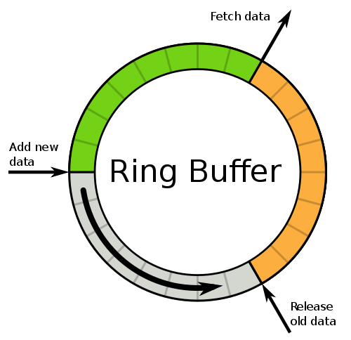

What is disruptor
LMAX disruptor is a high performance alternative to bounded queues for exchanging data between concurrent threads. Because of its high performance, disruptor is first applied in financial and messaging systems.
Why is disruptor so fast, because it shows mechanical sympathy to modern CPU designs. In following paragraphs, I will try to explain this step by step.
Technology is similar, thought behind is the key.
parallel programming
The idea behind disruptor is similar to real world cases. imaging you are the boss of fast food restaurant, what are you supposed to do to serve more customers? You can hire a waitress with fast hands.

However the speed of waitress is limited, so you hire another waitress. Now the two waitresses process requests in parallel, and the total throughput is doubled.

Parallel programming is just the same. with a high speed CPU, programs can run fast, result in high throughput and low latency. However CPU speed is limited to several GHZ, so more CPU cores are introduced, and programs need to run in parallel.

staged processing
Your restaurant grows rapidly, so you must extend your business to more cities, even more counties. As the boss you can not manage all of your employee by yourself, instead you hire managers.

Modern CPU has multiple level caches, and the architecture is similar to an organization.
Amdahl's law
In real world there is all kind of inefficiency, one department may depend on another. In a program, how can we optimize process in such a parallel and staged environment? Here comes the Amdahl's law.
Amdahl's law
The speedup of a program using multiple processors in parallel computing is limited by the time needed for the sequential fraction of the program. If %5 of the program cannot compute in parallel, the speedup can only reach 20 times no matter how many processors there are.
optimization
Batch message
To remove inefficiency, just find the bottleneck that can not run in parallel.
manager collect status of employees, but they do not send to you one by one, instead they wait until all the status is collected, and send to you in a batch.
Similarly, CPU caches is split to cache lines, since access main memory is expensive, the cache batch read data from main memory. Cache miss result in main memory access.
Disruptor use ring buffer to place objects pad together in memory so as to avoid false sharing and cache miss.

Synchronization
staff manager and product manager both collect information from employees. they can exchange status of employees directly since their offices are close to each other.
synchronization for shared resource is expensive.
- Lock: involves context switch, which is quite expensive.
- CAS: lock instruction pipeline and complex to program.
Disruptor use lock free memory barrier to synchronize sequence of ring buffer. Two cores in CPU talk to each other directly via memory barrier to exchange resource state.

Reference
Memory Barriers: a Hardware View for Software Hackers